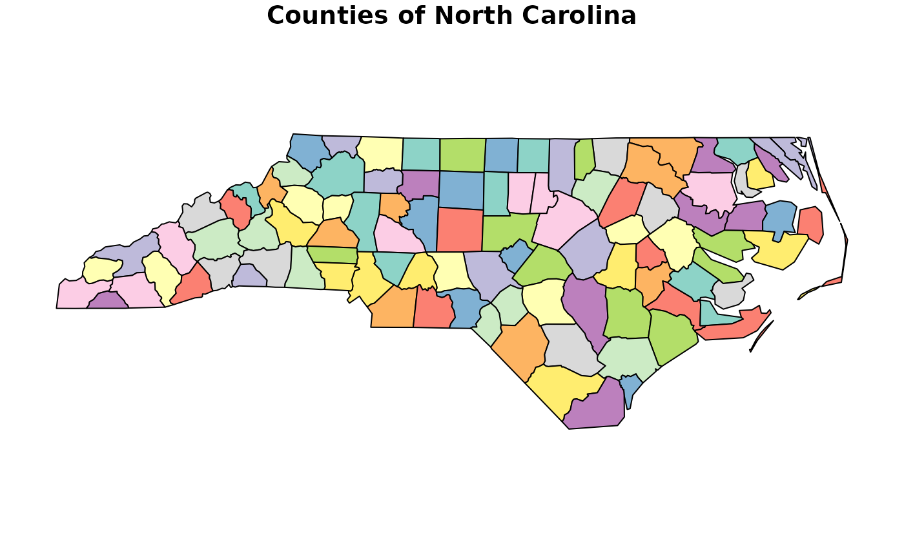
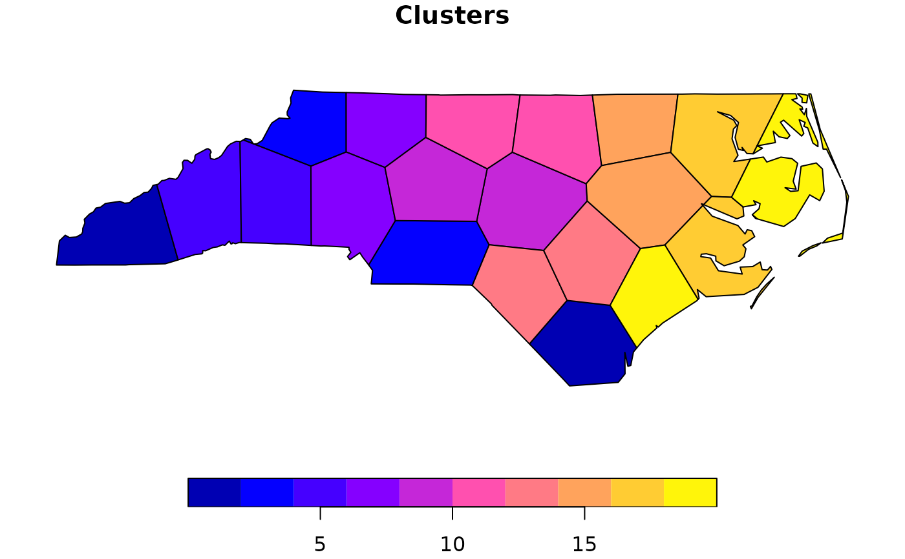

Create equal area polygons over a geographic range
Source:R/EqualAreaSample.R
EqualAreaSample.RdThis function creates n geographic clusters over a geographic area (x), typically a species
range, using kmeans clustering.
Usage
EqualAreaSample(
x,
n = 20,
pts = 5000,
planar_proj,
returnProjected,
reps = 100,
BS.reps = 9999
)Arguments
- x
An SF object or terra spatraster. the range over which to generate the clusters.
- n
Numeric. the number of clusters desired. Defaults to 20.
- pts
Numeric. the number of points to use for generating the clusters, these will be placed in a grid like fashion across
x. The exact number of points used may deviate slightly from the user submitted value to allow for equidistant spacing acrossx. Defaults to 5,000.- planar_proj
Numeric, or character vector. An EPSG code, or a proj4 string, for a planar coordinate projection, in meters, for use with the function. For species with very narrow ranges a UTM zone may be best (e.g. 32611 for WGS84 zone 11 north, or 29611 for NAD83 zone 11 north). Otherwise a continental scale projection like 5070 See https://projectionwizard.org/ for more information on CRS. The value is simply passed to sf::st_transform if you need to experiment.
- returnProjected
Boolean. Whether to return the data set in the original input CRS (FALSE), or in the new
projection(TRUE). Defaults to FALSE.- reps
Numeric. The number of times to rerun the voronoi algorithm, the set of polygons with the most similar sizes, as measured using their variance of areas will be selected. Defaults to 100.
- BS.reps
number of bootstrap replicates for evaluating results.
Value
A list containing two objects, the first the results of bootstrap simulations. The second an sf dataframe containing the polygons with the smallest amount of variance in size.
Examples
nc <- sf::st_read(system.file("shape/nc.shp", package="sf"), quiet = TRUE) |>
dplyr::select(NAME)
set.seed(1)
system.time(
zones <- EqualAreaSample(nc, n = 20, pts = 500, planar_proj = 32617, reps = 50)
)
#> Warning: did not converge in 10 iterations
#> Warning: did not converge in 10 iterations
#> Warning: did not converge in 10 iterations
#> Warning: did not converge in 10 iterations
#> Warning: did not converge in 10 iterations
#> user system elapsed
#> 5.314 0.041 5.356
plot(nc, main = 'Counties of North Carolina')

plot(zones$Geometry, main = 'Clusters')

zones$SummaryData
#> Metric Value
#> 1 variance.observed 9507223610
#> 2 quantile.0.001 9565302650
#> 3 lwr.95.CI 9507223610
#> 4 upr.95.CI 10692510134
#> 5 Voronoi.reps.asked 50
#> 6 Voronoi.reps.received 50
#> 7 BS.reps 9999